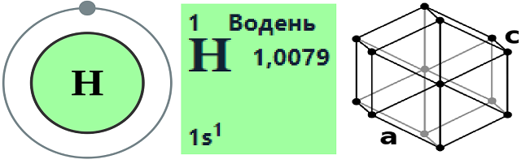

Хімія
Гідроген. Водень.
Анотація:
Даний матеріал про водень надає повну інформацію про цей хімічний елемент. Описано його властивості, використання та ізотопи. У тексті згадано його роль у створенні води та гідридів, його застосування у промисловості та як потенційне пальне майбутнього. Також надана інформація про використання його ізотопів у сфері атомної енергетики.
